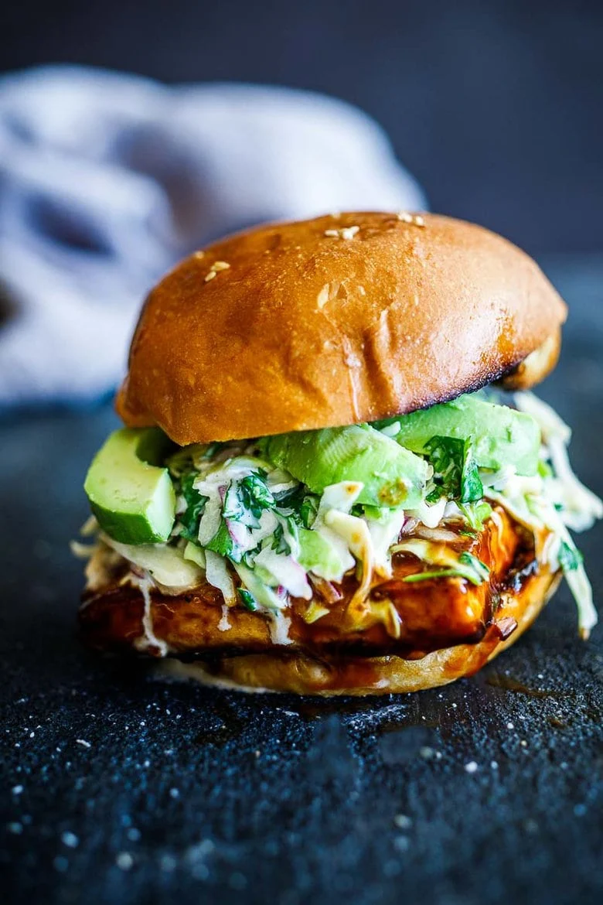

Crispy BBQ Tofu Burger

Description
Crispy tofu is slathered in BBQ sauce, topped with avocado & a cool cilantro cabbage slaw- a tasty vegan meal in under 30 minutes!
Ingredients
- Tofu
- Olive oil or coconut oil
- BBQ Sauce
- Sriracha or Red Chili Paste (optional)
- Cabbage- green or purple (use pre-cut cabbage if pressed for time)
- Onion
- Cilantro
- Vegan Mayo
- Vinegar
- Fresh cilantro
- Salt and Pepper
- Soft, toasted buns
- Avocado
Steps
- Cut the tofu into two slabs, one-inch thick, perhaps trimming to fit the bun. Pat gently with paper towels.
- Season a skillet generously with oil, salt and fresh cracked pepper and heat it up.
- Sear the tofu on both sides, until deeply golden and crispy.
- While the tofu is cooking, make the quick and easy slaw, using precut cabbage if pressed for time. Cilantro and onion add great flavor here.
- Mix BBQ Sauce and red chili paste (or sriracha) in a bowl and brush it liberally on the tofu, getting the bottom too.
Let the sauce caramelize just slightly in the pan, before turning the heat off.
- Toast the buns and assemble! Feel free to add avocado if you like- a bit messier, but oh so tasty!